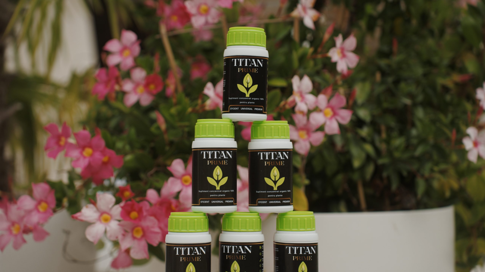
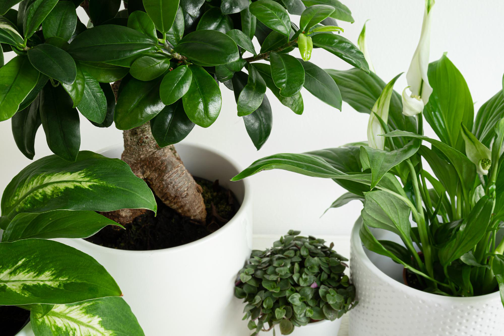
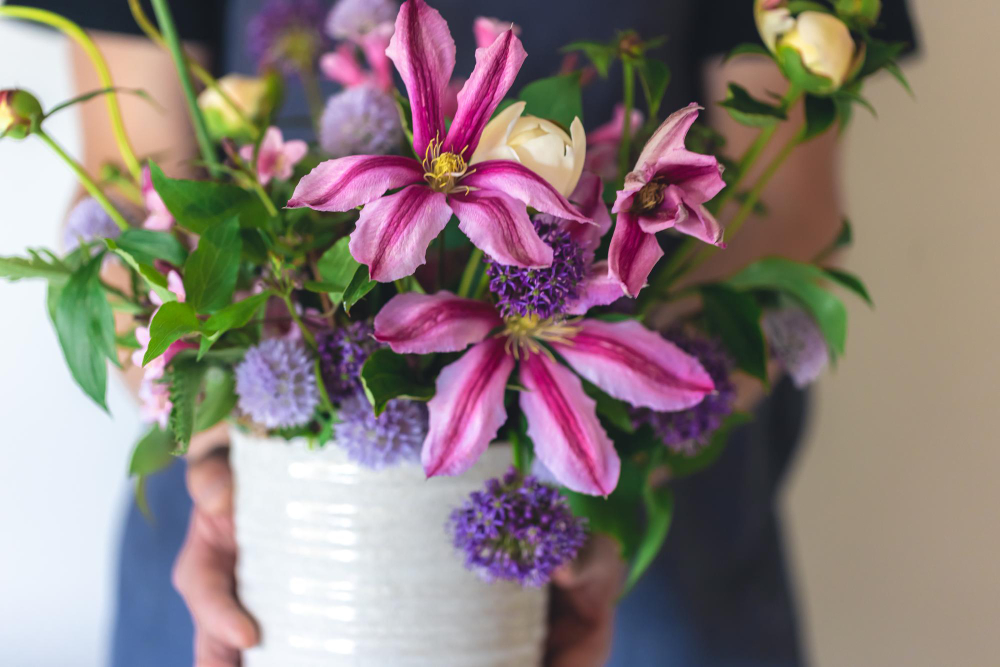
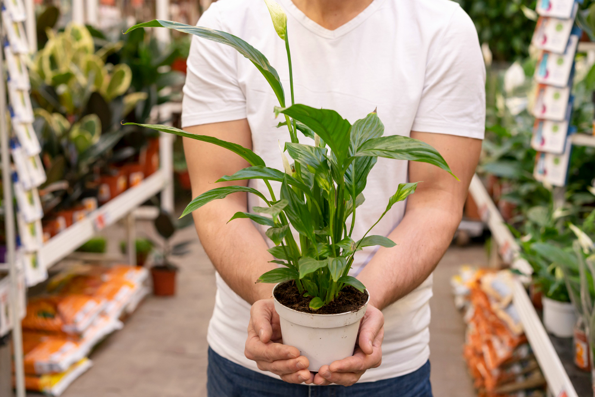
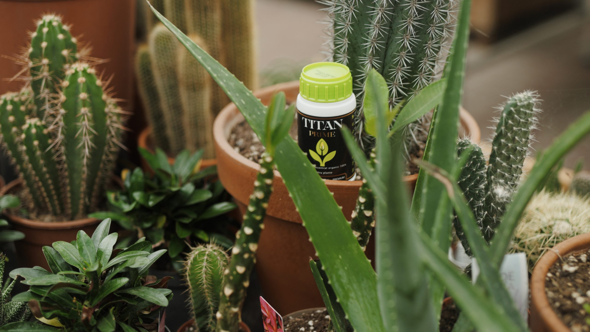
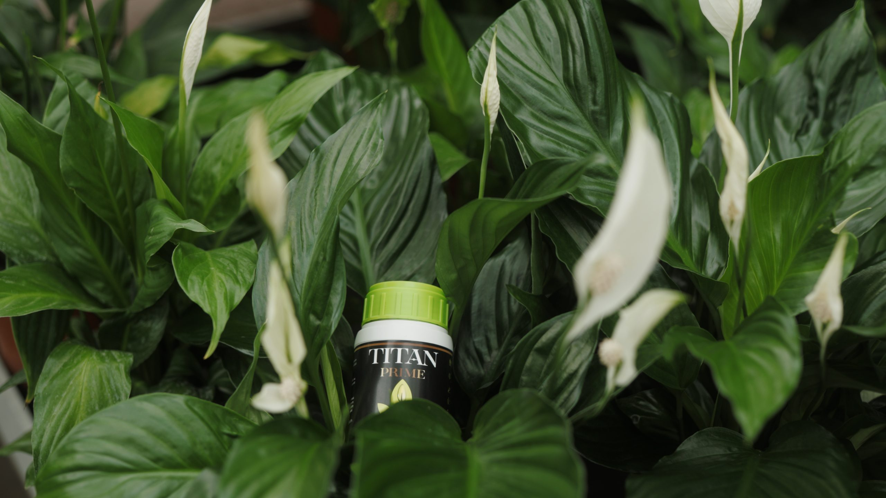
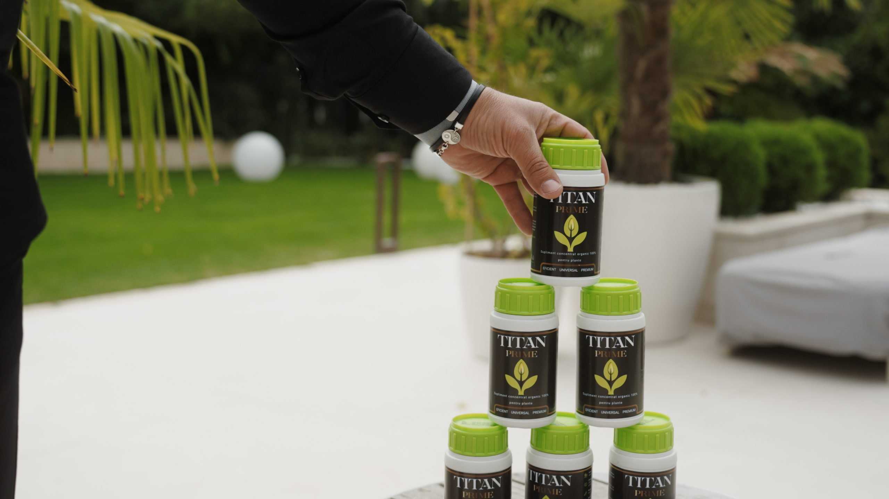
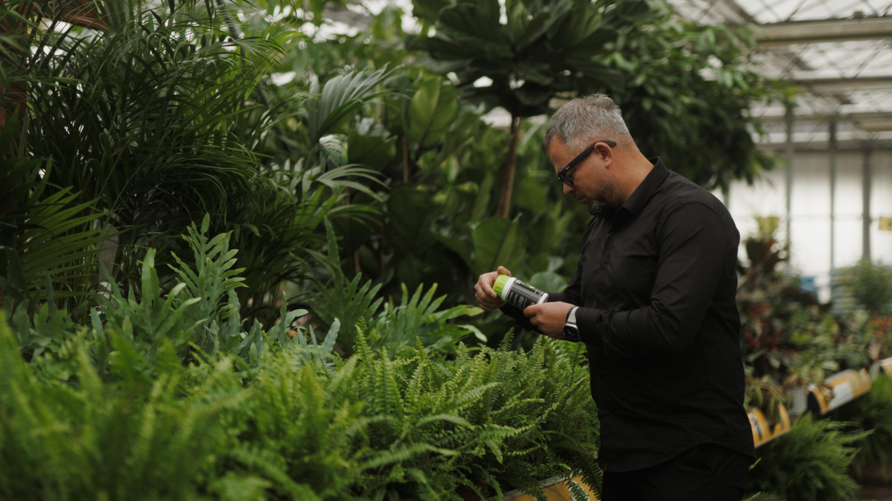

Plante mai verzi, mai puternice, mai vii — la fiecare udare.
Titan Prime este suplimentul organic concentrat, pe bază de guano, care hrănește, protejează și revigorează orice plantă. O formulă, toate plantele tale.
- 100% organic — sigur pentru plante, oameni și animale
- Funcționează pentru orice plantă, în orice anotimp
- Doar câțiva ml/L — o sticlă ține mult

Trei efecte vizibile
Hrănește
Nutrienți esențiali (Azot, Fosfor, Potasiu, Calciu) pentru o creștere echilibrată.
Protejează
Întărește rezistența naturală a plantei împotriva factorilor externi.
Revigorează
Stimulează regenerarea după stres, mutare sau secetă.
„Pentru mine, plantele nu sunt doar decor — sunt o extensie vie a sufletului nostru. De aceea am creat Titan Prime: o formulă unică, pe bază de guano, care redă viață plantelor slăbite, le întărește pe cele sănătoase și le ajută să treacă peste perioadele grele. E mai mult decât un îngrășământ — e începutul unei relații mai profunde cu natura."
Andrei Mărincean Specialist spații verzi · 15 ani de experiență
Vreau Titan PrimeTot ce-i trebuie plantei tale, într-o sticlă
Formulă concentrată
Doar câțiva ml/L pentru rezultate vizibile. O sticlă ține luni întregi.
100% organic
Ingrediente naturale care protejează planta, solul, animalele și familia ta.
Versatilitate totală
Funcționează la plante de apartament, de grădină și de cultură, în orice anotimp.
Sprijină imunitatea
Ajută planta să reziste mai bine la stres, boli și schimbări de mediu.
Economisește timp
Fără rețete complicate, fără pregătiri. Aplici și vezi cum cresc.
Recomandat de specialist
Creat de Andrei Mărincean, cu 15 ani de experiență în îngrijirea plantelor.
Fără bătăi de cap. Fără rețete complicate.
În sol
5 ml/L pentru întreținere · 10 ml/L pentru regenerare
Spray foliar
5 ml/L direct pe frunze
| Tip de plantă | Primăvară–Vară (mar.–oct.) | Toamnă–Iarnă (oct.–feb.) |
|---|---|---|
| Plante verzi | 1× / săptămână — 5 ml/L | 1× / 2 săptămâni — 5 ml/L |
| Plante cu flori | 1× / săptămână — 5 ml/L | 1× / 2 săptămâni — 5 ml/L |
| Suculente & cactuși | 1× / 2 săptămâni — 5 ml/L | 1× / lună — 5 ml/L |
❗ Bun de știut despre produsele organice
Titan Prime este 100% organic, deci acționează natural, în armonie cu planta și solul. Fiind organic, poate fermenta dacă este aplicat prea des sau în cantitate prea mare, mai ales când solul e deja umed.
Cum eviți asta:- Lasă solul să se usuce parțial între aplicări
- Respectă frecvența recomandată (mai rar iarna)
- Evită acumularea de apă în farfurioară sau ghiveci
🔄 Folosit corect, Titan Prime este inodor, eficient și sigur.
Ce vezi după câteva aplicări

🌿 Plante mai verzi, pline de viață
Frunze mai intens colorate, tulpini mai puternice — de la rădăcină până la vârf.

🌼 Înfloriri abundente
Flori mai multe, care țin mai mult, și recolte mai bogate.

🌱 Creștere rapidă și sănătoasă
Plante care rezistă mai bine la temperaturi extreme, vânt sau lipsa temporară de apă.

🌍 Sigur pentru toată familia
Fără reziduuri toxice, sigur pentru insectele benefice, animale de companie și oameni.
Titan Prime în acțiune



Ce spun cei care folosesc deja Titan Prime
„Folosesc Titan Prime în grădina mea de legume și plantele arată altfel. Mai verzi, mai puternice, iar roșiile au început să lege mai repede ca în alți ani. Îmi place că e 100% natural."
Marius D. · Client verificat
„Am folosit suplimentul cam un an și mi s-a părut simplu. Cel mai mult mi-a plăcut că e ceva universal — nu a trebuit să mă gândesc la ce plante se folosește."
Florin T. · Client verificat
„Aveam plante care începuseră să se ofilească după iarnă. După două săptămâni cu Titan Prime, frunzele au prins din nou viață și au apărut muguri noi. Nu mă așteptam la efecte așa rapide."
Alina M. · Client verificat
Tot ce vrei să știi
Pentru ce plante este Titan Prime?
Pentru toate — plante de apartament, de grădină, de cultură, plante verzi, cu flori, suculente și cactuși.
Este sigur pentru copii și animale de companie?
Da. Titan Prime este 100% organic, fără reziduuri toxice, sigur pentru oameni, animale și insectele benefice — folosit conform indicațiilor.
Cât rezistă o sticlă?
Mult. Formula e concentrată — ai nevoie de doar câțiva ml/L per aplicare.
Cum și cât de des îl aplic?
În sol (5 ml/L întreținere, 10 ml/L regenerare) sau ca spray foliar (5 ml/L). Frecvența variază pe anotimp — vezi tabelul de mai sus.
De ce miroase uneori a fermentat?
Pentru că e organic. Apare doar dacă aplici prea des sau pe sol prea umed. Respectă frecvența și lasă solul să se usuce parțial între aplicări.
Cum ajunge la mine și cum plătesc?
Livrare rapidă oriunde în țară, prin curier. Plătești ramburs (la livrare) sau cu cardul.
Pot returna produsul?
Da, ai 14 zile de retragere conform legii. Vezi Politica de retur.
Dă-le plantelor tale ce merită.
Titan Prime — puterea naturii, direct pentru plantele tale.